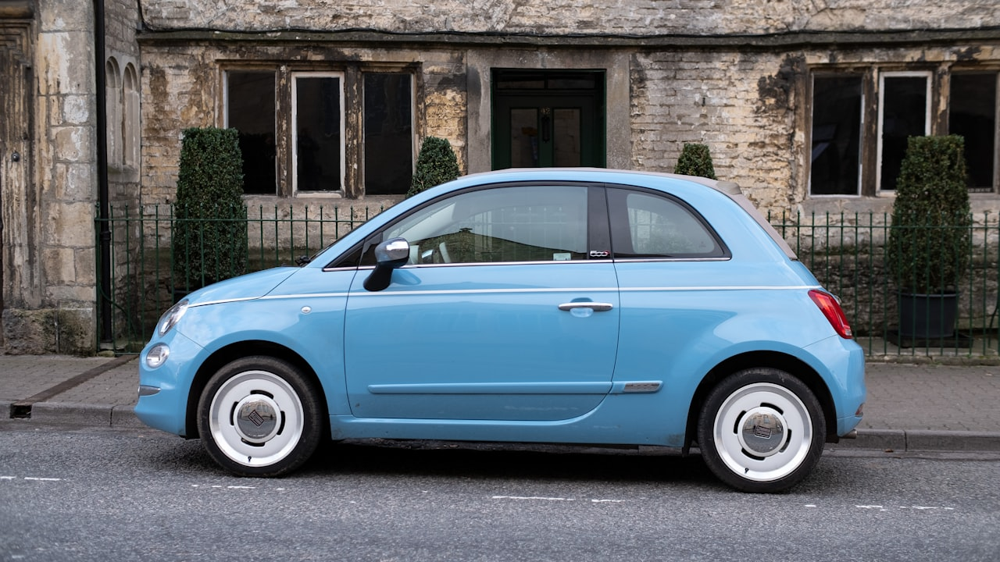

Une voiture sans permis (VSP, quadricycle léger L6e) n’est pas une citadine au permis B. Aixam, Ligier, Microcar, Citroën Ami : le contrat auto classique refuse souvent le risque ou le tarife mal. Ce guide relie RC obligatoire, formules vol / bris, permis AM et âge de souscription. Comparer mon assurance VSP · questionnaire VSP.

1. RC : le minimum légal pour circuler
Comme tout véhicule terrestre à moteur, une VSP doit être assurée au tiers (responsabilité civile). Sans ça : infraction, et aucun recours si vous blessez un piéton ou un autre véhicule. Les options (vol, incendie, bris de glace, assistance) se discutent ensuite selon la valeur du véhicule et le stationnement.
2. Pourquoi pas une auto « normale » ?
Les assureurs grand public calibrent leurs grilles sur le permis B et des cylindrées classiques. Un quadricycle léger a un PTAC, une vitesse maximale (45 km/h) et un permis AM différents. Les produits spécialisés (AMI 3F, FMA/Wakam, Solly Azar) existent pour ça — nous les comparons dans le CRM. Pages dédiées : marques VSP · Citroën Ami.
3. Âge : 14 ans au volant, souvent 16 ans à l’adhésion
- Conduite : permis AM dès 14 ans (réforme)
- Souscription partenaire : souvent dès 16 ans
- 14–15 ans : on enregistre le besoin et on rappelle à l’approche des 16 ans
- Jeunes 16–25 ans : prime plus élevée, franchises à lire
Détail âge et pièces : jeune conducteur 16 ans · permis AM, BSR, ASSR.
4. Formules : tiers, vol / bris, tous risques
Le tiers suffit à circuler. Dès qu’on gare la VSP dans la rue, le vol et le bris de glace deviennent le vrai sujet. Un véhicule neuf ou récent (électrique, Ami, Aixam récent) justifie souvent une formule plus complète. Voir vol, bris, tous risques et ordres de prix 2026.
5. Ce que nous demandons au devis
Année de naissance (ASSR si né en 1988 ou après), BSR / permis AM, marque et année du véhicule, usage ville, formule souhaitée. Cinq minutes en ligne, puis un rappel conseiller. Pages locales : hub VSP, par ville, permis AM, Nancy / Varangéville (54).
Checklist avant de comparer
- Carte grise du quadricycle (catégorie L6e)
- Attestation permis AM ou BSR + ASSR si concerné
- Lieu de stationnement (rue, box, résidence)
- Valeur à neuf / valeur actuelle
- Sinistres des 24–36 derniers mois
Pourquoi ce sujet compte pour votre assurance voiture sans permis
Que vous soyez en recherche d'un devis assurance voiture sans permis, en renouvellement ou en reaction a l'actualite, l'objectif reste le meme : comprendre vos garanties, comparer a postes equivalents et eviter les exclusions cachees. Les termes suivants reviennent souvent dans les contrats : assurance voiture sans permis, assurance vsp, devis vsp, assurance sans permis, quadricycle léger, permis AM assurance.
Les garanties a verifier avant de signer
- Plafonds et franchises : ce qui reste a votre charge apres sinistre
- Exclusions : situations non couvertes (usure, negligence, zones a risque…)
- Delais : carence, declaration de sinistre, traitement du dossier
- Options : assistance, protection juridique, extension famille ou materiel
- Prix annuel : hors promotions — refaire un comparatif chaque annee
Comparer sans se fier au seul prix affiche
Un tarif bas peut masquer un plafond bas ou une franchise elevee. Demandez un tableau comparatif avec les memes postes : assurance vsp, devis vsp, assurance sans permis. C'est la methode utilisee par les courtiers pour aligner Allianz, AXA, April, Generali, Zéphir, Solly Azar et le reste du marche.
Erreurs frequentes a eviter
- Souscrire en ligne sans lire les exclusions ni les plafonds
- Oublier de mettre a jour le contrat apres un demenagement, divorce ou changement d'activite
- Resilier avant d'avoir une attestation de remplacement (risque de rupture de garantie)
- Ne pas declarer un sinistre dans les delais contractuels
- Ignorer la clause de beneficiaire (prevoyance, assurance-vie, deces)
Lexique et mots-cles utiles (assurance voiture sans permis)
- assurance voiture sans permis : terme central de cet article — a retrouver dans votre contrat ou devis
- assurance vsp : a comparer entre assureurs a garanties equivalentes
- devis vsp : a comparer entre assureurs a garanties equivalentes
- assurance sans permis : a comparer entre assureurs a garanties equivalentes
- quadricycle léger : a comparer entre assureurs a garanties equivalentes
- permis AM assurance : a comparer entre assureurs a garanties equivalentes
Comment obtenir un accompagnement Leads Opportunities
Notre equipe de courtiers ORIAS vous aide a comparer, resilier ou souscrire avec un langage clair. Formulaire en ligne, demande de rappel ou parcours devis selon votre besoin : assurance voiture sans permis, sans engagement.
Consultez aussi notre catalogue complet des assurances (sante, auto, habitation, emprunteur, prevoyance, VTC, animaux) et nos pages SEO par ville pour un devis localise.
Questions frequentes
Comment comparer une offre assurance voiture sans permis en 2026 ?
Listez vos besoins reels (budget, garanties, situation familiale ou pro), puis demandez un comparatif a garanties equivalentes. Un courtier ORIAS explique les exclusions avant de signer.
Le devis est-il gratuit et sans engagement ?
Oui chez Leads Opportunities : devis gratuit, accompagnement humain, aucune obligation de souscription immediate.
Puis-je changer d'assureur en cours d'annee ?
Selon le contrat : loi Hamon, loi Chatel, loi Lemoine (emprunteur) ou echeance annuelle. Verifiez delais de preavis et equivalence de garanties.
Quels documents preparer pour un devis ?
Contrat actuel, dernier avis d'echeance, sinistres des 3 a 5 ans, situation (locataire, emprunteur, salarie, independant).
Courtier ou comparateur en ligne : quelle difference ?
Le comparateur affiche un prix ; le courtier verifie les plafonds, franchises, delais de carence et la compatibilite avec votre profil.
Cet article Assurance voiture sans permis 2026 remplace-t-il un conseil personnalise ?
Non : il informe sur les garanties et mots-cles utiles. Une etude personnalisee reste necessaire avant de resilier ou souscrire.